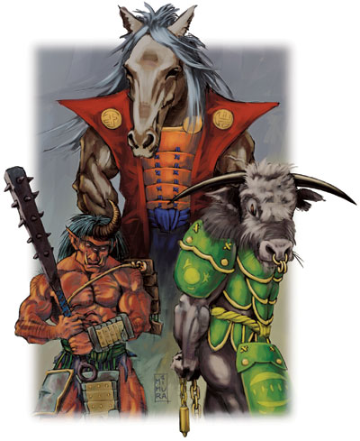
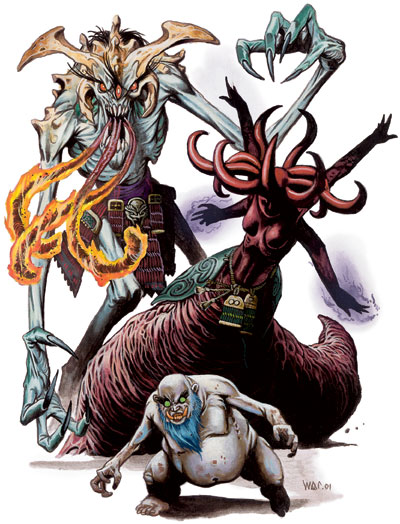

恶鬼(Oni)

恶鬼是一种使用它们可怕的力量和魔法来恐怖统治它们居住的地方的凶残的次等精魂。怪物图鉴里的食人魔巫师实际上是恶鬼的变体。
普通鬼
大型巨人（精魂）
生命骰：8d8+24（60hp）
先攻权：-1（敏捷）
速度：20英尺
防御等级：16（-1体型，-1敏捷，+5天生，+3足轻铠甲）
攻击：2爪抓+11近战；喷吐铜珠+4远程
伤害：爪抓1d6+6；喷吐铜珠4d6
面宽/触及：5英尺乘5英尺/10英尺
特殊攻击：喷吐铜珠，类法术能力
豁免：强韧+9，反射+1，意志+3
属性：力量23，敏捷8，体质17，智力8，感知12，魅力13
技能：攀爬+10，聆听+4，侦察+4
专长：顺劈斩、猛力攻击
--------------------------------------------
气候/地形：温带山岳、丘陵、平原、森林和地底
组织：单独、小组（2-8）、连队（9-20）或许多（21-100加上4-40个妖物或鼠精）
挑战级数：7
宝物：标准
阵营：通常中立邪恶
进化：视人物职业而定
普通鬼，就如名字一样，是数量最多和恶鬼里最弱小的。
普通鬼大约有8 英尺高，体重300磅。它们是肌肉强壮的巨人，手臂和腿部都长着浓密的毛。它们手的末端是肮脏结实的爪子，脚指甲长有倒勾。皮肤通常是红色的，也有绿色、黑色、橙色和紫色的。它们有一只、两只或三只突出的眼睛，一只或者两只巨大的角和又宽又尖的耳朵。它们的头发一般很长（通常及肩）可能是银色、黑色和绿色的。它们有黄金或者象牙色的长牙。它们穿着类似本地居民的衣服，但是一般又脏又破。
普通鬼说巨人语、Tengu、地精语和通用通语，以一种深沉洪亮的嗓音。恶鬼的鼾声如同打雷，笑声能震落树叶。
战斗
大多数普通鬼是渴血并残忍的。不仅仅是为了食物（它们喜欢吃人肉），它们喜欢伤害和欺凌其他生物。一个饥饿或者愤怒的恶鬼一般对敌人冲刺，用它的爪子把敌人撕碎，就像一头无法控制的野兽。
一支小队会有更狡猾的战略，特别是埋伏旅者或者其他不怀疑的猎物。例如，一个恶鬼可能用变形自己把自己变成一个友好的农民和旅者说话，其他隐形的则包围目标。
喷吐铜珠（超自然）（Spit Copper）：每天一次，一只普通鬼能够对射程10英尺远的单一目标喷出一个融化的铜球。如果远程接触攻击命中，则造成2d6点伤害加上2d6点火焰伤害。铜球价值1d4gp重2d4磅。
类法术能力：随意施展――惊恐术，一天三次――飞行术、变形自己，一天二次――隐形，一天一次――cloud chariot*（自己和50磅重的物体）。这些能力如同一名10级术士施展的同名法术（DC=11+法术等级）。
牛头鬼
大型巨人（精魂）
生命骰：12d8+48（102hp）
先攻权：+0（敏捷）
速度：20英尺
防御等级：20（-1体型，+7天生，+4半甲（partial armor））
攻击：超大巨剑+15/+10近战；抵撞+10近战
伤害：超大巨剑2d8+10；抵撞1d8+3
面宽/触及：5英尺乘5英尺/10英尺
特殊攻击：类法术能力
特性：识破隐形，再生5
豁免：强韧+12，反射+4，意志+6
属性：力量25，敏捷10，体质19，智力14，感知14，魅力17
技能：攀爬+12，聆听+7，侦察+7
专长：顺劈斩、猛力攻击、精通击破武器
--------------------------------------------
气候/地形：任何陆地
组织：单独或成组（2-20）
挑战级数：9
宝物：标准
阵营：通常守序中立
进化：视人物职业而定
牛头鬼是精魂界军队里强大的勇士。
牛头鬼和普通鬼很像，但是更大（约9英尺高）更结实（平均350磅）。它们有公牛的头、野猪的嘴、小耳朵和两只长长的角。皮肤一般是深橙色、灰色或者深紫色。它们穿着精美的长袍和铠甲，展现出在精魂界军队中的地位。
牛头鬼说巨人语、Tengu、地精语、通用语和精魂语。
战斗
牛头鬼使用适合体型的武器。除了列出的巨剑（o-dachi），还使用矛、�S刀、戟和三叉矛近战。
类法术能力：随意施展――惊恐术、fire shuriken*、飞行术、隐形、变形自己，一天二次――cloud chariot*（自己和50磅重的物体）。
识破隐形（超自然）（See invisibility）：牛头鬼能看见视线内的隐形生物和物体。
再生：火焰及强酸能对牛头鬼造成正常伤害。
马面鬼
大型巨人（精魂）
生命骰：10d8+50（95hp）
先攻权：+0（敏捷）
速度：30英尺
防御等级：18（-1体型，+5天生，+4精制品半甲）
攻击：超大�S刀（naginata） +14/+9近战；中型长鞭 +6远程
伤害：超大�S刀2d6+12
面宽/触及：5英尺乘5英尺/10英尺
特殊攻击：法术，类法术能力
特性：真知术，再生5
豁免：强韧+13，反射+8，意志+10
属性：力量27，敏捷10，体质21，智力14，感知16，魅力19
技能：攀爬+14，聆听+7，侦察+7
专长：顺劈斩、战斗施法、精通击破武器
--------------------------------------------
气候/地形：任何陆地
组织：单独或成组（2-20）
挑战级数：10
宝物：标准
阵营：通常守序中立
进化：视人物职业而定
马面鬼是精魂界军队的指挥官，牛头鬼的领袖。
马面鬼比牛头鬼更大（约10英尺高，重1000磅），有着粗糙的马头。它们的盔甲总是精致品的。
马面鬼说巨人语、Tengu、地精语、通用语和精魂语。
战斗
除了�S刀和牛头鬼用的武器，马面鬼也用30英尺长的长鞭。
法术：马面鬼能够像10级巫觋一样施法。它们通常准备以下法术：
0 级――舞光术、侦测魔法、闪光术、光亮术；1级――backbiter*、fiery eyes*、iron scarf*、melt*；2级――炎之手里剑*、人类定身术、whip*；3级――animate fire*、火球术、fire wings*；4级――dancing blade*、变形他人、火墙术；5级――fire breath*。
类法术能力：随意施展――惊恐术、飞行术、隐形、变形自己，一天三次――星界投射（自己和50磅重的物体）、cloud chariot*（自己和50磅重的物体）、幻化灵体（自己和50磅重的物体）。
真知术（超自然）（True Seeing）：马面鬼有持续的真知术能力。
再生：火焰及强酸能对马面鬼造成正常伤害。

阴间恶鬼（Oni,Shadowlands）[五环传奇]
恶鬼是阴间最可怕的居民。纯粹邪恶和恐怖的魔鬼。它们是原产于阴间的异界生物，同时拥有异界生物和阴间的特性。
恶鬼的种类无穷无尽，同时还包括了一些特别的个体。大多数恶鬼部落由大量的属于普通种类的恶魔之鬼、肢之鬼、病气之鬼、激怒之鬼、废野之鬼、邪火之鬼、山流之鬼、式部之鬼、大胃之鬼、巨力之鬼,、沙地之鬼和其他一些不知名的恶鬼组成。它们是阴间最平常的恶鬼。
领导这些部落或独自行动的，是大量特别的恶鬼。这包括能够生下普通恶鬼的四大鬼王：恶魔(在遗忘之门之战被杀)、大胃、式部和邪火。“元素使”也属于这一类：Moetechi和Taki-Bi(火)；Yosuchi和Kaze(风)；Toichi和Jimen（土）；Oyuchi和Mizu（水）；Kukanchi和Akeru（空）。
最后，在镇守Kaiu Wall的螃蟹部落守卫之间谣传阴间诞生了一种新的恶鬼，可能填补了因Fu Leng 死亡而带来的权利真空。这些恶鬼领主数量大概有六个左右，可怕的力量无法估计。可能有一个恶鬼领主杀死了Shinomen森林的Toturi皇帝。那场战斗的幸存者说那个恶鬼站立大约有8英尺高，肌肉发达，穿着鲜红的盔甲。他拥有四之超大的手臂，当时其中一只拿着巨大的巨剑（野太刀）。它的头部有皇冠状的骨刺，嘴部挂着长长的胡须。他一击就砍倒了皇帝。
所有的阴间恶鬼都说阴间语和Rokugan语（通用语）。
战斗
恶鬼是邪恶的对手，残酷无情又对人类社会充满恨意。有一些非常狡猾，甚至聪明，善于利用策略。但是其他则和作奴隶的妖物的策略差不多。所有的恶鬼都有一些共同的特性，再加上阴间种类调整值和它们自己的特性。
免疫（特异）：恶鬼对毒素免疫。
能量抗力（特异）：恶鬼对寒冷、火焰和强酸有10点抗力。
变幻外形（超自然）：恶鬼能够以一个标准动作变换成任意从小型到大型的类人生物。该能力类似于变形自己法术但是只能变成类人生物。当使用该能力时，恶鬼在易容检定上有+10环境加值。
心灵感应（超自然）：恶鬼能够通过心灵感应与周遭100英尺内任何会使用语言的生物沟通。
技能：*当使用该变幻外形时，所有恶鬼在易容检定上有+10环境加值。
废野之鬼（Haino No Oni）
与大多数组成阴间军队的喧闹的部落不同，废野之鬼既安静又隐秘，当然还有饥饿。在人类形态的伪装下，废野之鬼的长舌头潜入旅馆和房间，并将之插入熟睡的受害者的喉咙中吸取水分。它们在Rokugan比在阴间更常见，甚至在人类社会中行走都不被发觉。
在天然形态下，废野之鬼看起来像类人的蟾蜍，有着干燥粗糙的皮肤和突起的眼球。他们站立下有5英尺高，体重120磅。几乎很难看到这种形态下的废野之鬼，因为在人类形态的伪装下，他们仍然能使用那长长的管状的舌头――在威胁之下――也会使用适度的爪抓攻击。在两种形态下他们的数据资料是一样的。
战斗
废野之鬼通常在夜晚攻击，爬到房间或旅馆的屋顶上，将他们的舌头穿过屋顶的裂缝或敞开的窗户，如果受害者惊醒，他们一般会逃走。
水分吸取(特异)（Water Drain）：废野之鬼使用他那细长中空的舌头从受害者身上吸取液体。恶鬼只能对无助或被压制的对手使用这种攻击。因为当舌头插入受害者的嘴里或其他开口时会分泌一种麻痹性的黏液，熟睡的受害者必须通过DC20的感知检定才能清醒并注意到该攻击。每轮恶鬼造成1点暂时力量伤害。废野之鬼进食晚餐4轮就饱了。
再生（特异）：废野之鬼能被玉制(jade)或Kuni水晶(Kuni crystal)武器所伤害，或者拥有至少+1增强加值的光荣（honorable）或祝福(blessed)武器也行。
中型异界生物（邪恶，阴间）
生命骰：4d8+8（26hp）
先攻权：+3（敏捷）
速度：30英尺，攀爬30英尺
防御等级：17（+3敏捷，+4天生）
攻击：舌击 +7近战；或爪抓+4近战
伤害：爪抓1点暂时力量伤害；爪抓1d4
面宽/触及：5英尺乘5英尺/5英尺（舌击15英尺）
特殊攻击：水分吸取
特性：恶鬼特性，再生3
豁免：强韧+6，反射+7，意志+5
属性：力量10，敏捷17，体质14，智力15，感知12，魅力19，污染11
技能：唬骗+11，攀爬+11，交涉+11，易容+11*，躲藏+9，无声移动+10，察言观色+7
专长：武器娴熟（舌击）
――――――――――――――――――――――――――――――――――――――――――――
气候/地形：阴间
组织：单独
挑战级数：3
宝物：标准
阵营：总是混乱邪恶
进化：5-12HD（中型）
肢之鬼（Ashi No Oni）
表面上和掘地虫很类似，肢之鬼就像一个身体上有七根布满荆棘的触手的虫类。多刺的外壳保护着它的身体，头部有更多的角和倒刺。它的面部像一个怪诞的人类，有着深陷的黑眼睛和有着一排锋利牙齿的张开的大嘴。恶鬼的身体大概有15英尺长，体重约2000磅。一般攻击时它从地底半路杀出，不喜欢在地面上移动。
战斗
虽然它很聪明，但行为就像一个愚蠢的猎人一样，从岩石或地底突然出现，攻击任何在它的领地行走的猎物。只有当对手没有在它的第一轮攻击下倒下时它才会考虑使用策略。一旦肢之鬼被迫思考，它就变得异常狡诈。如果受伤，他就会潜入地底，一会后在另一个地点现身，希望再次突袭它的敌人。
荆棘（特异）（Thorns）：以一个标准动作，肢之鬼能从触角上爆出荆棘对所有15英尺内的生物做出远程攻击。每点伤害都表示人物被一根荆棘所击中。
毒素（特异）：触手或荆棘爆，强韧豁免（触手攻击DC16，或荆棘爆DC=15+1/每根荆棘）；初始和后续伤害皆为1点暂时力量，1点暂时敏捷和1点暂时体质。
类法术能力：随意施展――黑暗术，亵渎术，荆棘丛生。这些能力的效果，如同一名8级的血术士施展的同名法术（豁免DC=19+法术等级）。
恐惧灵光（超自然）：恶鬼被一个持续的恐惧和邪恶的灵光所包围。30英尺半径内的生物必须成功通过DC16的意志检定，否则就颤栗。颤栗的生物在攻击检定，伤害检定和豁免检定上有-2士气减值。通过豁免检定的在一天之内对恶鬼的灵光免疫。
荆棘皮肤（特异）（Thornskin）：用天生武器或徒手攻击命中肢之鬼会受到1d4点穿刺伤害。恶鬼甲壳上的荆棘是无毒的。
颤动感知（特异）：只要在其周遭60英尺范围内有任何东西碰触地面，肢之鬼即能感应到它的位置。
再生（特异）：恶鬼能被玉制或Kuni水晶武器所伤害，或者拥有至少+2增强加值的光荣或祝福武器也行。
大型异界生物（邪恶，阴间）
生命骰：8d8+16（52hp）
先攻权：+3（敏捷）
速度：20英尺，掘穴10英尺
防御等级：18（-1体型，+3敏捷，+6天生）
攻击：啮咬+13近战，7触手+8近战；或荆棘爆+11远程
伤害：啮咬1d8+9，触手1d6+4外加毒素；或荆棘爆1d4外加毒素
面宽/触及：5英尺乘5英尺/10英尺（触手15英尺）
特殊攻击：荆棘，毒素，类法术能力，恐惧灵光
特性：荆棘皮肤，伤害减免10/+1，恶鬼特性，颤动感知，再生3
豁免：强韧+8，反射+9，意志+7
属性：力量22，敏捷17，体质14，智力10，感知13，魅力15，污染9
技能：专注+10，脱逃+11，躲藏+7，威吓+10，方向感+9，聆听+7，无声移动+11，侦察+9
专长：闪避、猛力攻击、专攻武器（荆棘）
――――――――――――――――――――――――――――――――――――――――――――
气候/地形：阴间
组织：单独
挑战级数：9
宝物：标准
阵营：总是混乱邪恶
进化：9-16HD（大型）；17-24HD（超大型）
山流之鬼（Sanru No Oni）
有点类似鸟妖，山流之鬼是有四只手臂，蝙蝠状翅膀的腐食恶魔。山流之鬼身体大部分像人类，但是有着为了配合额外的手臂而过长的躯干。它的眉毛又长又细，耳朵特别地尖，面部嶙峋多骨。所有的四只手和脚都有能撕碎猎物的利爪。巨大笨拙的翅膀从背部萌生。恶鬼身高约7英尺，翼展15英尺，体重平均250磅。
战斗
山流之鬼最喜欢的战术是使用飞越攻击用脚部的利爪耙抓地面上的生物，同时又不会落在近战攻击的范围之内。当遇到会飞的敌人，特别是机动性更好的生物，山流之鬼通常会逃跑。同样，如果它们发现自己因为远程或法术攻击而受到太多伤害的话，就会决定猎物不值得去努力而逃走――通常一旦原本的猎物和其他恶鬼作战时就又像秃鹫一样在天上盘旋。
类法术能力：随意施展――污染之云￥，黑暗术，亵渎术。这些能力的效果，如同一名8级的血术士施展的同名法术（豁免DC=20+法术等级）。
恐惧灵光（超自然）：恶鬼被一个持续的恐惧和邪恶的灵光所包围。30英尺半径内的生物必须成功通过DC16的意志检定，否则就颤栗。颤栗的生物在攻击检定，伤害检定和豁免检定上有-2士气减值。通过豁免检定的在一天之内对恶鬼的灵光免疫。
再生（特异）：恶鬼能被玉制或Kuni水晶武器所伤害，或者拥有至少+2增强加值的光荣或祝福武器也行。
中型异界生物（邪恶，阴间）
生命骰：6d8+24（51hp）
先攻权：+3（敏捷）
速度：30英尺，飞行40英尺（不良）
防御等级：16（+3敏捷，+3天生）
攻击：2脚踢+8近战
伤害：脚踢1d6+2
面宽/触及：5英尺乘5英尺/5英尺
特殊攻击：类法术能力，恐惧灵光
特性：伤害减免10/+1，恶鬼特性，再生2
豁免：强韧+9，反射+8，意志+7
属性：力量14，敏捷17，体质18，智力13，感知15，魅力16，污染10
技能：平衡+9，唬骗+9，威吓+9，方向感+8，知识（阴间）+7，聆听+8，无声移动+9，搜索+7，侦察+8，野外求生+8
专长：警觉、飞越攻击
――――――――――――――――――――――――――――――――――――――――――――
气候/地形：阴间
组织：单独或一队（2-8）
挑战级数：9
宝物：标准
阵营：总是混乱邪恶
进化：7-12HD（中型）；13-18HD（大型）
吞噬之鬼（Kamu No Oni）
组成大多数阴间部落的贪吃的恶魔，吞噬之鬼因为它们喜欢在攻击新的敌人之前把倒下的敌人的尸体肢解并吞吃，而被Kuei Wall的螃蟹部落守卫所惧怕。它们拥有强壮的类人身躯，但是没有脑袋――反而在颈部有一个巨大的嘴巴。它们站直大概有8到9英尺高，体重约300磅。吞噬之鬼愚蠢又残忍，但是很服从命令，特别当命令是“杀光他们”时。
战斗
吞噬之鬼使用空手攻击，喜欢抓住对手并撕烂对方。
精通擒抱（特异）：使用这项能力之前，吞噬之鬼必须先用它的挥击攻击命中目标。一旦定身，在维持定身期间，每轮自动造成啮咬伤害。
恐惧灵光（超自然）：恶鬼被一个持续的恐惧和邪恶的灵光所包围。30英尺半径内的生物必须成功通过DC16的意志检定，否则就颤栗。颤栗的生物在攻击检定，伤害检定和豁免检定上有-2士气减值。通过豁免检定的在一天之内对恶鬼的灵光免疫。
大型异界生物（邪恶，阴间）
生命骰：10d8+60（105hp）
先攻权：+1（敏捷）
速度：30英尺
防御等级：14（-1体型，+1敏捷，+4天生）
攻击：2挥击+16近战，啮咬+11近战
伤害：挥击1d8+7，啮咬2d6+3
面宽/触及：5英尺乘5英尺/10英尺
特殊攻击：精通擒抱，恐惧灵光
特性：伤害减免20/+2，盲视，恶鬼特性，再生4
豁免：强韧+13，反射+8，意志+6
属性：力量24，敏捷12，体质22，智力7，感知9，魅力11，污染7
技能：平衡+13，攀爬+19，威吓+13，跳跃+19，聆听+11
专长：顺劈斩、地狱摇篮*、猛力攻击
――――――――――――――――――――――――――――――――――――――――――――
气候/地形：阴间
组织：单独，小组（2-20）或部落（21-120）
挑战级数：10
宝物：标准
阵营：总是混乱邪恶
进化：11-15HD（大型）；16-24HD（超大型）；25-30HD（巨型）
式部之鬼（Shikibu No Oni）
四大鬼王之一所生的式部之鬼是喜欢恶作剧的疯狂精魂。最初的式部之鬼承担着复活一个死去的女性（Hiruma Shikibu的夫人）的任务.在控制它以前的主人并化装成他的样子之前，它变成她的样子并冒充她长达几星期之久。在一个月的时间内，它在Hiruma的土地上行走，散播不洁和混乱。最终，召唤这个恶鬼的Kuni修验者以自己的生命为代价将它放逐到了阴间。式部之鬼仍然居住在阴间的深处，定时产下后代并在人间散布灾祸。
式部之鬼是矮小的矮人般的类人生物，平均4英尺高体重110磅。扭曲的面孔上空洞的绿眼睛茫然地注视着前方，巨大的黄色牙齿从口中突出，亮蓝色的胡须挂在下巴上。它们的身体矮胖又浮肿，四肢又长又细。它们经常使用对所有恶鬼都很平常的变幻外形能力，但是，很少以天然形态出现。
战斗
式部之鬼尽量避免战斗，当他们在人类社会中行动时经常变幻外形以免引起过多的猜疑。但是无论它们伪装成什么样子，仔细观察的话在夜晚总能发现，因为在晚上它们总是到墓地吃腐烂的尸体。当维持人类形态时，它们散布有害的谎言，玷污和羞辱尽可能多的人，尽可能地散布不洁和污染。
类法术能力：随意施展――操纵死尸，降咒，冻寒之触，污染之云￥,黑暗术，死亡丧钟，亵渎术，侦测思想，变巨术，幻化灵体，圈套术。这些能力的效果，如同一名7级的血术士施展的同名法术（豁免DC=19+法术等级）。
恐惧灵光（超自然）：恶鬼被一个持续的恐惧和邪恶的灵光所包围。30英尺半径内的生物必须成功通过DC14的意志检定，否则就颤栗。颤栗的生物在攻击检定，伤害检定和豁免检定上有-2士气减值。通过豁免检定的在一天之内对恶鬼的灵光免疫。
再生（特异）：恶鬼能被玉制或Kuni水晶武器所伤害，或者拥有至少+2增强加值的光荣或祝福武器也行。
灵遁（超自然）（Ethereal Escape）：如果生命值降到0或更低，式部之鬼的灵魂会立即离开肉体到灵界（如同幻化灵体）。然后它的灵魂能够进入一具附近的尸体，复活它并慢慢地将它变成恶鬼身体的替代品。这个转变需要2d4分钟，但是恶鬼能够继续以新身体战斗，所有生命值补满。恶鬼只能维持灵体化1分钟。在这段时间它能在灵界移动，但不能穿过玉石。如果恶鬼在这段期间没有进入尸体，它就被摧毁。
小型异界生物（邪恶，阴间）
生命骰：5d8+5（27hp）
先攻权：+7（+3敏捷，+4精通先攻）
速度：20英尺
防御等级：21（+1体型，+3敏捷，+7天生）
攻击：2挥击+8近战
伤害：挥击1d4+2
面宽/触及：5英尺乘5英尺/5英尺
特殊攻击：类法术能力，恐惧灵光
特性：伤害减免20/+2，法术抗力20，恶鬼特性，再生5，灵遁豁免：强韧+5，反射+7，意志+5
属性：力量14，敏捷16，体质12，智力15，感知13，魅力15，污染9
技能：唬骗+7，易容+7，躲藏+8，威吓+7，知识（阴间）+7，聆听+6，无声移动+8，搜索+7，察言观色+6，侦察+6
专长：闪避、精通先攻
――――――――――――――――――――――――――――――――――――――――――――
气候/地形：阴间
组织：单独
挑战级数：10
宝物：标准
阵营：总是混乱邪恶
进化：6-15HD（小型）
巨力之鬼（Ugulu No Oni）
脚步声能撼动大地，口中发出震雷般的响声，巨力之鬼是一个脾气暴躁的野兽。它站立有13到15英尺高，体重约1000磅。它那充满肌肉的身体被糙毛的紫色皮革所覆盖。它的鬓角长出两个巨大的角，眼睛就像随时能爆发出火焰的余烬，鞭子般的舌头就像火焰毒蛇一样从充满利齿的嘴里伸出。四指的手和四趾的脚上长有巨大的爪子。蓬松的紫黑鬃毛长满肩部和背部。
战斗
巨力之鬼使用它巨大的手掌横扫，一击就能把骨头压成粉末。虽然它缺少技能和战略，但却拥有力量和毅力。
类法术能力：随意施展――污染之云￥,深渊黑暗术，亵渎术，造火术，防护箭矢，粉碎音波。这些能力的效果，如同一名9级的血术士施展的同名法术（豁免DC=17+法术等级）。
恐惧灵光（超自然）：恶鬼被一个持续的恐惧和邪恶的灵光所包围。30英尺半径内的生物必须成功通过DC14的意志检定，否则就颤栗。颤栗的生物在攻击检定，伤害检定和豁免检定上有-2士气减值。通过豁免检定的在一天之内对恶鬼的灵光免疫。
法术免疫（超自然）（Spell Immunity）：每只巨力之鬼都对一种法术免疫，等效于对该法术有无限的法术抗力。该免疫会保护恶鬼免遭法术，模拟该法术的魔法物品的类法术效果和生物的天生类法术能力。掷1d10决定恶鬼的法术免疫：
1. 降咒 2. bo of water* 3.死亡一指 4.怪物定身术 5.jade strike* 6.katana of fire* 7.杀生术 8.tetsubo of earth* 9.tomb of jade* 10.yari of air*
再生（特异）：恶鬼能被玉制或Kuni水晶武器所伤害，或者拥有至少+2增强加值的光荣或祝福武器也行。
大型异界生物（邪恶，阴间）
生命骰：9d8+54（94hp）
先攻权：-1（敏捷）
速度：40英尺
防御等级：24（-1体型，-1敏捷，+16天生）
攻击：2爪抓+16近战
伤害：爪抓2d4+8
面宽/触及：5英尺乘5英尺/10英尺
特殊攻击：类法术能力，恐惧灵光
特性：伤害减免20/+2，法术免疫，恶鬼特性，再生3
豁免：强韧+12，反射+5，意志+8
属性：力量26，敏捷9，体质22，智力11，感知14，魅力11，污染7
技能：唬骗+9，威吓+9，跳跃+17，知识（阴间）+9，聆听+11，搜索+9，察言观色+11，侦察+11
专长：顺劈斩、大顺劈斩、猛力攻击
――――――――――――――――――――――――――――――――――――――――――――
气候/地形：阴间
组织：单独
挑战级数：12
宝物：标准
阵营：总是混乱邪恶
进化：10-20HD（大型）；21-30HD（超大型）
恶魔之鬼（Akuma No Oni）
被四大鬼王之一所生，恶魔之鬼是充满了火焰和憎恨和恐怖生物。最初的恶魔之鬼是作为凤凰部落Isawa家族研究阴间和地底世界的被禁止的实验一部分而诞生的。在对抗Rokugan的长期战争中，它作为将军为阴间服务，甚至在Fu Leng的毁灭之后，直到在遗忘之门之战（Battle at Oblivion’s Gate）被杀。
因为生育它们的生物已经被消灭，在阴间的恶魔之鬼的数量是有限的――因此螃蟹部落的将军和侦察员定时祈祷来感谢命运。次等的恶魔之鬼的恨意和破坏欲不比它们的祖先少，被对人类社会的嫌恶和对痛苦和屠杀的喜爱所吞噬。
恶魔之鬼是大型的双足动物，站直大约有10 英尺高。身体几乎都是由骨骼组成（平均只有250磅），外面覆盖着坚韧的金属般的皮革。三根长舌，如同涂了炽火胶一样燃烧，从那满是獠牙的口中挥出。它们骨质的手指末端有六英寸长，剃刀般的爪子。它们的三只眼睛看起来像蛇的一样――如果蛇眼也会燃烧着阴间那无法抑制的恶念的话。
战斗
恶魔之鬼被消灭所有与Rokugan 有关联的东西的欲望和因为拥有精明的智力与领导力的职责所折磨。任何特定的恶魔之鬼如果不加控制的话，就会独自冲向Kaiu Wall消灭尽可能多的螃蟹部落的守卫，然后愉快的死在那里。但是大多数都掌管着小队的弱等恶鬼，并承担着协调这些生物的战略责任。虽然拥有小心计划和战术灵活性的能力，恶魔之鬼像猛虎一般作战。
精通擒抱（特异）：使用这项能力之前，恶鬼必须先用它的舌击攻击命中目标。一旦定身，在维持定身期间，每轮造成1d6点火焰伤害。
燃烧之舌（特异）（Burning tongues）：每个舌头命中后都会在受害者身上流下燃烧的唾液。在命中后唾液每轮造成1点火焰伤害。该伤害不和被定身的目标受到的火焰伤害叠加。该伤害直到唾液被清除才会结束，醋或酒能够做到。
类法术能力：随意施展――污染之云￥,深渊黑暗术，亵渎术，侦测善良，侦测魔法，丧志术。这些能力的效果，如同一名12级的血术士施展的同名法术（豁免DC=19+法术等级）。
恐惧灵光（超自然）：恶鬼被一个持续的恐惧和邪恶的灵光所包围。30英尺半径内的生物必须成功通过DC18的意志检定，否则就颤栗。颤栗的生物在攻击检定，伤害检定和豁免检定上有-2士气减值。通过豁免检定的在一天之内对恶鬼的灵光免疫。
再生（特异）：恶鬼能被玉制或Kuni水晶武器所伤害，或者拥有至少+2增强加值的光荣或祝福武器也行。
大型异界生物（邪恶，阴间）
生命骰：12d8+48（102hp）
先攻权：+2（敏捷）
速度：40英尺
防御等级：19（-1体型，+2敏捷，+8天生）
攻击：2爪抓+16近战；或3舌击+11近战接触
伤害：爪抓1d6+5，舌击1d6火焰
面宽/触及：5英尺乘5英尺/10英尺（舌击5英尺）
特殊攻击：精通擒抱，燃烧之舌，类法术能力，恐惧灵光
特性：伤害减免20/+2，法术抗力23，恶鬼特性，再生5
豁免：强韧+12，反射+10，意志+9
属性：力量20，敏捷14，体质18，智力11，感知13，魅力15，污染9
技能：唬骗+14，专注+16，知识（阴间）+12，聆听+13，搜索+12，察言观色+13，法术辩识+12，侦察+13
专长：顺劈斩、闪避、大顺劈斩、猛力攻击
――――――――――――――――――――――――――――――――――――――――――――
气候/地形：阴间
组织：单独或小队（1外加2-8次级恶鬼[吞噬之鬼、山流之鬼或巨力之鬼]）
挑战级数：13
宝物：标准
阵营：总是中立邪恶
进化：13-24HD（大型）；25-36HD（超大型）
邪火之鬼（Kyoso No Oni）
邪火之鬼是另一种由四大鬼王所生的品种。最初的邪火之鬼仍然是阴间内部政治的关键人物，它和Iuchi Shahai（Fu Leng的暗之女）一起策划阴谋诡计。最初被一个龙之部落的嫉妒心很强的修验者为了消灭一个竞争者所创造，它的天性在随后的几个世纪里仍然没有改变――邪火之鬼仍然是一个猎人，潜伏的阴间的孤独的猎食者。邪火的后代使用同样的战术，依赖潜行和恶鬼大量的类法术能力消灭猎物。
邪火之鬼看起来像一堆肉，或者是一个长长的肉虫，上面有一个女性类人的躯干。它的长度在10到20英尺之间，虽然该生物的下部身体是无定形的，但是躯干只比平均人类大一点。邪火之鬼体重约500磅。躯干上伸出四只手臂，环绕着能对敌人释放的黑色火焰。它没有面部的头上长有九只弯曲的角。它的肤色从暗红到乌黑都有。
战斗
邪火之鬼在地下跟踪它们的猎物，从地下突然出现伏击它们的目标。它们喜欢和敌人保持距离，使用邪火和类法术能力而不是爪子。
邪火（超自然）（Unholy fire）：邪火之鬼能够随意造出劈啪作响的黑色火焰并投向敌人。火焰的射程单位为20英尺。防护火焰对该能量无效，因为它吞噬目标的灵魂而不是身体。
类法术能力：随意施展――渎神之语，魅惑怪物，污染之云￥,死亡丧钟，深渊黑暗术，亵渎术，反制善良，丧志术，变巨术，幻化灵体，恐惧术，暗示术，Tainted aura￥,心灵遥控，无误传送术和邪居。这些能力的效果，如同一名16级的血术士施展的同名法术（豁免DC=22+法术等级）。
恐惧灵光（超自然）：恶鬼被一个持续的恐惧和邪恶的灵光所包围。30英尺半径内的生物必须成功通过DC18的意志检定，否则就颤栗。颤栗的生物在攻击检定，伤害检定和豁免检定上有-2士气减值。通过豁免检定的在一天之内对恶鬼的灵光免疫。
再生（特异）：恶鬼能被玉制或Kuni水晶武器所伤害，或者拥有至少+2增强加值的光荣或祝福武器也行。
颤动感知（特异）：只要在其周遭60英尺范围内有任何东西碰触地面，邪火之鬼即能感应到它的位置。
大型异界生物（邪恶，阴间）
生命骰：7d8+21（52hp）
先攻权：+2（敏捷）
速度：40英尺，掘穴30英尺
防御等级：21（-1体型，+2敏捷，+10天生）
攻击：4爪抓+10近战；或邪火+8远程接触
伤害：爪抓1d6+4，邪火1d4暂时魅力
面宽/触及：5英尺乘5英尺/10英尺
特殊攻击：类法术能力，恐惧灵光
特性：伤害减免20/+2，法术抗力23，恶鬼特性，再生5，颤动感知
豁免：强韧+8，反射+7，意志+9
属性：力量18，敏捷15，体质16，智力17，感知19，魅力20，污染12
技能：唬骗+7，专注+10，交涉+12，躲藏+9，威吓+12，知识（阴间）+10，聆听+11，无声移动+9，野外求生+8
专长：多巧手、近程射击
――――――――――――――――――――――――――――――――――――――――――――
气候/地形：阴间
组织：单独或小队（2-8）
挑战级数：13
宝物：标准
阵营：总是混乱邪恶
进化：8-12HD（大型）；13-21HD（超大型）
沙地之鬼（Yattoko No Oni）
虽然看起来有点像普通的螳螂，沙地之鬼不仅仅是依赖九个钳状的附肢（包括头部）将食物送入巨大的口中的消化腔。沙地之鬼的身体有点像壳质的捕蝇草――有着多齿口腔的总长达15英尺的蚕茧般的壳状物。头部在一端，有两个巨大的复眼和一组用来抓住猎物送入嘴中的下颚。两个钳状的腿在另一端支撑着该生物，恶鬼的侧面呈现另外六根长长的昆虫般的肢体，末端都是钳子。
战斗
沙地之鬼生活在阴间的沙漠地区，在那里它们潜伏在沙下搜索猎物。当它们侦察到地表的运动时，就会立刻从沙中浮现，越过猎物并用那长长的钳状附肢攻击。该生物的钳子异常锋利，重击范围是19-20。
精通擒抱（特异）：使用这项能力之前，恶鬼必须先用它的爪抓攻击命中目标。一旦定身，它能以一个移动等效动作抓起猎物并将它放入口中，然后自动造成啮咬伤害并能尝试囫囵活吞。
囫囵活吞（特异）：沙地之鬼可以尝试通过成功的擒抱检定吞掉一个擒抱中的中型或更小的生物。被活吞的生物，每轮在恶鬼的胃中遭到1d8点强酸伤害。被活吞的生物能够通过把恶鬼的下颚撑开来逃脱。这需要成功地对抗沙地之鬼的擒抱检定。（如果恶鬼死亡，它在擒抱检定上自动取10，但是被吞生物的盟友可以尝试撬开下颚。）
恶鬼的内脏能够容纳一个中型，二个小型，四个超小，八个微型或十六个超微型生物。
类法术能力：随意施展――污染之云￥,深渊黑暗术，亵渎术，飞虫走兽。每天三次――Tainted aura￥。这些能力的效果，如同一名14级的血术士施展的同名法术（豁免DC=20+法术等级）。
恐惧灵光（超自然）：恶鬼被一个持续的恐惧和邪恶的灵光所包围。30英尺半径内的生物必须成功通过DC20的意志检定，否则就颤栗。颤栗的生物在攻击检定，伤害检定和豁免检定上有-2士气减值。通过豁免检定的在一天之内对恶鬼的灵光免疫。
再生（特异）：恶鬼能被玉制或Kuni水晶武器所伤害，或者拥有至少+2增强加值的光荣或祝福武器也行。
超大型异界生物（邪恶，阴间）
生命骰：14d8+70（133hp）
先攻权：+5（敏捷）
速度：30英尺，掘穴20英尺
防御等级：20（-2体型，+5敏捷，+7天生）
攻击：7钳击+18近战；或啮咬+18近战
伤害：钳击2d4+6,啮咬2d6+9
面宽/触及：5英尺乘5英尺/10英尺(啮咬0英尺)
特殊攻击：精通擒抱，囫囵活吞，类法术能力，恐惧灵光
特性：伤害减免10/+1，颤动感知，恶鬼特性，再生4
豁免：强韧+14，反射+14，意志+14
属性：力量22，敏捷21，体质20，智力14，感知15，魅力17，污染10
技能：唬骗+17，攀爬+20，专注+19，躲藏+19，跳跃+20，知识（阴间）+16，聆听+16，搜索+16，察言观色+16，侦察+16
专长：顺劈斩、寓守于攻、猛力攻击、精通击破武器
――――――――――――――――――――――――――――――――――――――――――――
气候/地形：阴间
组织：单独
挑战级数：14
宝物：标准
阵营：总是混乱邪恶
进化：16-24HD（大型）；25-32HD（超大型）
病气之鬼（Byoki No Oni）
被称为“瘟疫恶魔”的病气之鬼是通过接触传播瘟疫的恐怖。它们看起来大体上像类人生物但是非常憔悴。它们那杂色的皮肤上覆盖有球根状的脓疱，会滴下脓汁和黑色的油状液体。它们的臭气非常厉害，经常能在它们进入视线之前就能闻到。它们的头部有螳螂的特征。它们痛苦存在的唯一目的就是散播肮脏的传染病，把感染者变成能够再度传染疾病的无意识的僵尸。
战斗
病气之鬼会攻击任何活物，希望传染疾病。它不顾自己生命地战斗，因为它的伤口也会对伤害到它的人传染疾病。
疾病（特异）：尸瘟（Zombie plague）――爪抓，强韧检定（DC20）；潜伏期一天；伤害 1d4点暂时体质和1d4点暂时智力。因为尸瘟而死的人会立刻变成瘟尸。（关于疾病请见地下城主指南第三章。）
传染（特异）（Infection）：除了自己的攻击会传染尸瘟，病气之鬼当在战斗中受伤也会对附近的人物传染尸瘟。当恶鬼受到伤害（高于他的伤害减免），所有恶鬼身边5英尺半径的生物必须通过一个反射检定（DC为10加上对恶鬼造成的实际伤害，在伤害被减免之后），否则就可能被感染。反射检定失败的人必须对抗上述疾病的强韧检定。
类法术能力：随意施展――死云术、污染之云￥,疫病术，深渊黑暗术，亵渎术，臭云术。每天三次――Tainted aura￥。这些能力的效果，如同一名13级的血术士施展的同名法术（豁免DC=18+法术等级）。
散发恶臭（特异）：在病气之鬼10英尺范围内的生物都必须通过一次成功的强韧检定（DC20），否则就恶心。恶心的生物不能攻击、施法、专注维持法术或任何需要注意力的事情。人物每轮只能进行一个移动（移动等效）动作。
恐惧灵光（超自然）：恶鬼被一个持续的恐惧和邪恶的灵光所包围。30英尺半径内的生物必须成功通过DC17的意志检定，否则就颤栗。颤栗的生物在攻击检定，伤害检定和豁免检定上有-2士气减值。通过豁免检定的在一天之内对恶鬼的灵光免疫。
再生（特异）：恶鬼能被玉制或Kuni水晶武器所伤害，或者拥有至少+2增强加值的光荣或祝福武器也行。
大型异界生物（邪恶，阴间）
生命骰：13d8+52（110hp）
先攻权：+3（敏捷）
速度：40英尺
防御等级：16（-1体型，+4敏捷，+4天生）
攻击：2爪抓+16近战
伤害：爪抓1d6+4外加疾病
面宽/触及：5英尺乘5英尺/10英尺
特殊攻击：疾病，传染，类法术能力，散发恶臭，恐惧灵光
特性：伤害减免10/+1，恶鬼特性，再生3
豁免：强韧+14，反射+11，意志+10
属性：力量19，敏捷17，体质19，智力12，感知14，魅力12，污染8
技能：攀爬+17，专注+17，威吓+14，方向感+15，跳跃+17，知识（阴间）+14，聆听+15，察言观色+15，侦察+15
专长：顺劈斩、大顺劈斩、强韧加强、猛力攻击
――――――――――――――――――――――――――――――――――――――――――――
气候/地形：阴间
组织：单独或疫群（1外加2-8瘟尸）
挑战级数：15
宝物：标准
阵营：总是混乱邪恶
进化：14-20HD（大型）；21-30HD（超大型）；31-39HD（巨型）
瘟尸（Plague Zombies）
瘟尸是制造它们的病气之鬼的无意识的仆人。它们看起来像渗出溃疡和脓疮的被活化的尸体，散发出发乳的酸味。它们和对应体型的僵尸数据相同，除了能用攻击传播尸瘟外。
疾病（特异）：尸瘟――挥击，强韧检定（DC10+1/2僵尸的HD）；潜伏期一天；伤害 1d4点暂时体质和1d4点暂时智力。因为尸瘟而死的人会立刻变成瘟尸。
激怒之鬼（Gekido No Oni）
激怒之鬼是所有阴间的憎恨和愤怒的具体化身。它们是狂怒的恶魔，而它们的狂怒是一股可怕的毁灭性的力量。
激怒之鬼是瘦长的双足生物，拥有坚韧的皮肤，脊骨上长有倒刺。它们拥有惊人的长爪，脚趾和脚跟上长有倒刺，头上长有小角。嘴中有一排锋利的牙齿，并且可以张大到和头部一样宽。它们总共高约9英尺，但是一般都是弯腰行动。它们体重约400磅。
在狂怒状态下，激怒之鬼看起来变得更大。他们站得更直，手和腿变得更粗。皮肤变得更硬，给人以变大的假象。
战斗
在正常状态下，激怒之鬼就是一个可怕的对手，使用爪抓攻击将肉体撕碎。有时在战斗中，它会进入一种狂怒状态使它变得不可阻止。在狂怒状态下，恶鬼发出狂笑，以它造成的破坏为乐。
狂怒（特异）（Rage）: 激怒之鬼最可怕的能力就是它的狂怒，在战斗中可能会随时发作。当恶鬼在攻击时自然骰为19或20，在下一轮开始就进入狂怒状态。丧失理智的愤怒会使恶鬼的力量和体质+6，意志检定+3，恐惧灵光的DC+3（这会使成功通过检定的再次进行检定）。狂怒会使AC-2，但是该生物的皮革变厚，使它的天生装甲从+3变成+8，因此实际上防御等级+3。当狂怒时，除了爪抓以外恶鬼还能使用脚踢和啮咬攻击，使用下文的命中的伤害。恶鬼每天能狂怒3次，每次狂怒持续10轮（3轮外加休整后的体质调整值+7）。除了恶鬼的恐惧灵光DC和天生盔甲增加，其他方面和野蛮人的大狂暴相同。
当狂怒时，激怒之鬼得到：+30hp；AC18；豁免 强韧+14，意志+14；攻击 +17/+17/+15/+15/+15近战（1d6+8,爪抓[X2]；1d6+4,脚踢[X2]；1d8+4，啮咬）；力量26，体质24。
类法术能力：随意施展――污染之云￥,黑暗术，亵渎术，丧志术，变巨术。这些能力的效果，如同一名11级的血术士施展的同名法术（豁免DC=18+法术等级）。恶鬼在狂怒时不能使用类法术能力。
恐惧灵光（超自然）：恶鬼被一个持续的恐惧和邪恶的灵光所包围。30英尺半径内的生物必须成功通过DC16的意志检定，否则就颤栗。颤栗的生物在攻击检定，伤害检定和豁免检定上有-2士气减值。通过豁免检定的在一天之内对恶鬼的灵光免疫。
再生（特异）：恶鬼能被玉制或Kuni水晶武器所伤害，或者拥有至少+2增强加值的光荣或祝福武器也行。
大型异界生物（邪恶，阴间）
生命骰：11d8+44（93hp）
先攻权：+3（敏捷）
速度：40英尺
防御等级：15（-1体型，+3敏捷，+3天生）
攻击：2爪抓+15近战
伤害：爪抓1d6+5
面宽/触及：5英尺乘5英尺/10英尺
特殊攻击：狂怒，类法术能力，恐惧灵光
特性：伤害减免10/+1，恶鬼特性，再生3
豁免：强韧+11，反射+10，意志+8
属性：力量20，敏捷16，体质18，智力11，感知13，魅力13，污染8
技能：攀爬+16，躲藏+14，威吓+12，跳跃+16，知识（阴间）+11，聆听+13，无声移动+14，侦察+12
专长：顺劈斩、多重攻击、猛力攻击
――――――――――――――――――――――――――――――――――――――――――――
气候/地形：阴间
组织：单独，一群(2-5)或一堆(6-36)
挑战级数：15
宝物：标准
阵营：总是混乱邪恶
进化：12-15HD（大型）；16-24HD（超大型）；25-33HD（巨型）
大胃之鬼(Tsuburu No Oni)
作为第四种由四大鬼王所生的品种，大胃之鬼是超级贪吃欲的体现。最初的大胃之鬼是作为守卫而被创造，但要求吃掉固定数量的学徒，骑乘用马和被抓的地精作为服务的代价。现在隐藏在阴间，在那里它的后代和其他追随者把源源不断的受害者带给它吃，它迟缓但连续地生下后代，对世界散播更多像它一样的怪物。
大胃之鬼差不多就是个由紫色坚韧皮肤覆盖的胃袋，形成一个不定形的团状物，直径约15英尺。体重至少8000磅。这个东西的两边有两个憔悴的手臂，顶上有一个奇形怪状的的头，应该是背部的地方有一排尖刺。它的头被一个有着两排锋利的牙齿与适合缠卷的的舌头的巨嘴所支配。它的眼睛和嘴巴只是这个开口旁边的裂缝而已。
战斗
大胃之鬼就是为了吃而存在，并且不断寻找可接受的食物（不象它们那满足于被供养的祖先）。“可接受的食物”是指任何从最近一天到现在能动的东西，无论是自己会动还是因为风的缘故，但是大胃之鬼喜欢在吞下喉咙时会挣扎、踢动和尖叫的食物。
精通擒抱（特异）：使用这项能力之前，恶鬼必须先用它的啮咬攻击命中目标。一旦定身，它能自动造成啮咬伤害并能尝试囫囵活吞。使用爪抓命中敌人的贪吃之鬼也能如上所述擒抱。一旦定身，它能以一个移动等效动作抓起猎物并将它放入口中，然后如上所述自动造成啮咬伤害。
囫囵活吞（特异）：大胃之鬼可以尝试通过成功的擒抱检定吞掉一个擒抱中的中型或更小的生物。被活吞的生物，每轮在恶鬼的胃中遭到2d6+9的碾压伤害和1d8点强酸伤害。被活吞的生物能够使用爪抓或小型或超小型的挥砍武器对胃部造成50点伤害成功逃脱（DC20）。一旦生物逃脱，肌肉会自动关闭洞口；另一个被活吞的生物必须再次砍开出口。
恶鬼的内脏能够容纳二个中型，四个小型，八个超小，十六个微型或三十二个超微型生物。
啃食（特异）：当被吞的猎物死在恶鬼的胃里时，恶鬼在吞吃血肉的同时也能吞噬生物的生命力。恶鬼每吞吃8HD的生物，就会得到1个HD。这项能力会将受害者的尸体彻底摧毁，防止任何需要部分尸身的复活或复生法术产生作用。祈愿术、奇迹术或完全复生术可让受到啃食的受害者恢复生命。
类法术能力：随意施展――污染之云￥,深渊黑暗术，亵渎术，丧志术，心灵遥控，无误传送术（自己外加最多100磅的物体――被吞吃的生物不算在100磅之内）。这些能力的效果，如同一名15级的血术士施展的同名法术（豁免DC=17+法术等级）。
恐惧灵光（超自然）：恶鬼被一个持续的恐惧和邪恶的灵光所包围。30英尺半径内的生物必须成功通过DC17的意志检定，否则就颤栗。颤栗的生物在攻击检定，伤害检定和豁免检定上有-2士气减值。通过豁免检定的在一天之内对恶鬼的灵光免疫。
再生（特异）：恶鬼能被玉制或Kuni水晶武器所伤害，或者拥有至少+3增强加值的光荣或祝福武器也行。
超大型异界生物（邪恶，阴间）
生命骰：15d8+75（142hp）
先攻权：-1（敏捷）
速度：10英尺
防御等级：27（-2体型，-1敏捷，+20天生）
攻击：啮咬+22近战，2爪抓+17近战
伤害：啮咬2d6+9，爪抓2d4+4
面宽/触及：10英尺乘10英尺/10英尺
特殊攻击：精通擒抱，囫囵活吞，啃食，类法术能力，恐惧灵光
特性：伤害减免30/+3，法术抗力26，恶鬼特性，再生5
豁免：强韧+14，反射+8，意志+7
属性：力量28，敏捷8，体质20，智力11，感知7，魅力10，污染7
技能：唬骗+15，专注+20，威吓+15，知识（阴间）+15，聆听+15，搜索+15，察言观色+13，侦察+15
专长：警觉、顺劈斩、大顺劈斩、猛力攻击
――――――――――――――――――――――――――――――――――――――――――――
气候/地形：阴间
组织：单独
挑战级数：16
宝物：标准
阵营：总是混乱邪恶
进化：16-24HD（超大型）；25-32HD（巨型）；33-45HD（超巨型）
|